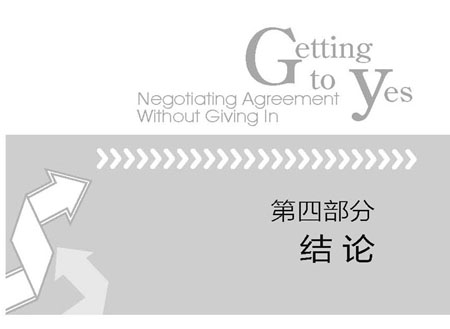

本书所讲的每一点几乎都是你或多或少曾经经历过的。我们所做的是，通过总结一般性经验，提供一个能有助于你思考和行动的基本框架。本书的观点越是与你的经验和直觉一致就越好。每当我们把自己的理论讲述给那些经验丰富的律师和商人时，他们总是说：“现在我明白我一直是如何做的以及为什么有时能起作用了。”或是说：“我知道你们讲的非常正确，因为我早已知道这些了。”
一本书可以给你指明正确的方向，使你明白道理和自己所做的一切，帮助你从中学习。
但是，要真正掌握技巧只能依靠自己。仅靠阅读《加拿大皇家空军手册》是不会使你成为一名合格空军的。只看关于网球、游泳、骑车或骑马的书，你也不会成为这方面的专家。谈判也不例外。
1964年，在伦敦的海德公园，一位美国父亲与他12岁的儿子在玩飞盘，享受着美好的周六。当时，英国没有几个人见过飞盘，因此，不久就吸引了一群过路人，好奇地观看这种奇怪的运动。最后，一位戴着毡帽的英国人走上前问这位父亲：“对不起，打扰一下，我看了你们一刻钟，到底谁赢了？”
在大多数情况下，问一位谈判者“谁赢了”就好比问谁赢得了婚姻一样不合适。如果对于自己的婚姻提出这样的问题，表明你已输掉了一场更重要的谈判—它关系到谈判的内容和方式，如何处理相互间的关系以及共同的利益和分歧。
本书讲述的是如何“赢得”这个重要的谈判—怎样用更好的方式解决双方的分歧。要想取得更好的结局，谈判方式当然必须能产生令人满意的实质性结果；在原则问题上取胜并不是唯一的目标，而失去原则肯定不是其答案。理论和实践都已经证明，从长远看，原则谈判方法会达到甚至超过用其他谈判技巧所取得的实质利益。另外，原则谈判更有效率，且对人际关系损害最小。我们发觉这种方法很好用，希望你也有这样的体会。
这并不意味着可以轻而易举地改变习惯，把感情与原则分开，或者轻而易举地让别人与你合作并明智地解决共同问题。你需要不时提醒自己，自己首先要在谈判方法上努力取胜—避免自己在应得的利益与公平之间进行选择，因为原则谈判方法可以使你二者兼得。